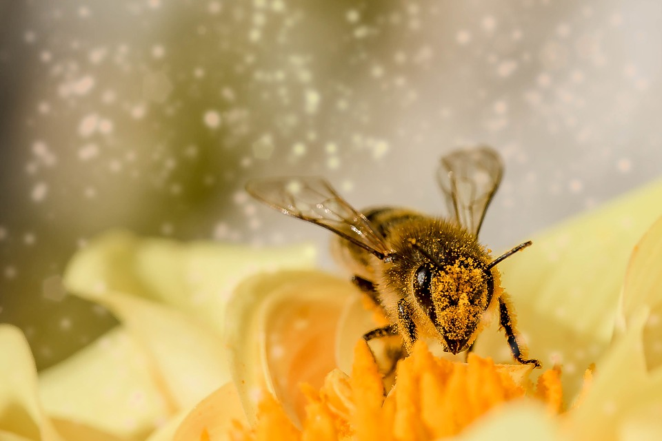

Opiskelen tällä hetkellä Tieto- ja viestintäalaa Etelä-Savon ammattiopistossa. Aikaisemmin opiskelin leipuri-kondiittoriksi myös Esedulla.
Harrastan vapaa-ajalla ulkoilua ja salila käyntiä pari kertaa viikossa. Lisäksi autan äitiä mehiläisten hoidossa, kun tarve tulee. 
Aikaisempaa työkokemusta minulla on leipuri-kondiittori hommista eri työssä oppimispaikoista. Viimeisin työpaikka oli Mölnlyckeellä sairaalatarvikevalmistajana.